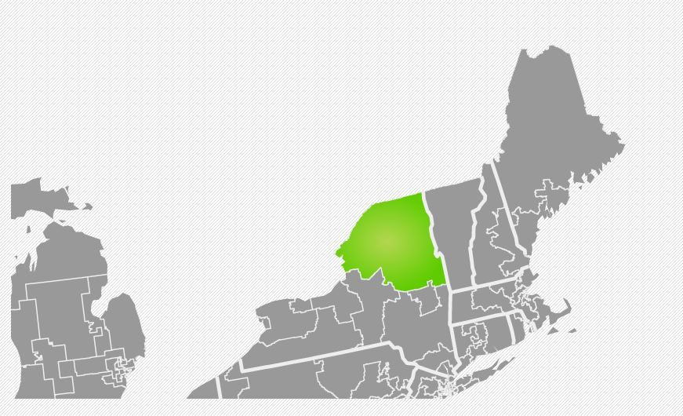

commutr is an application made for iOS utilizing the new MultiPeer Connectivity features of iOS7. It allows for communication, music streaming, and file sharing between passengers in trains.

canvass advisory system side project required data visualizations. This map was created using d3.js along with US census data to create a map of ny state senate districts.